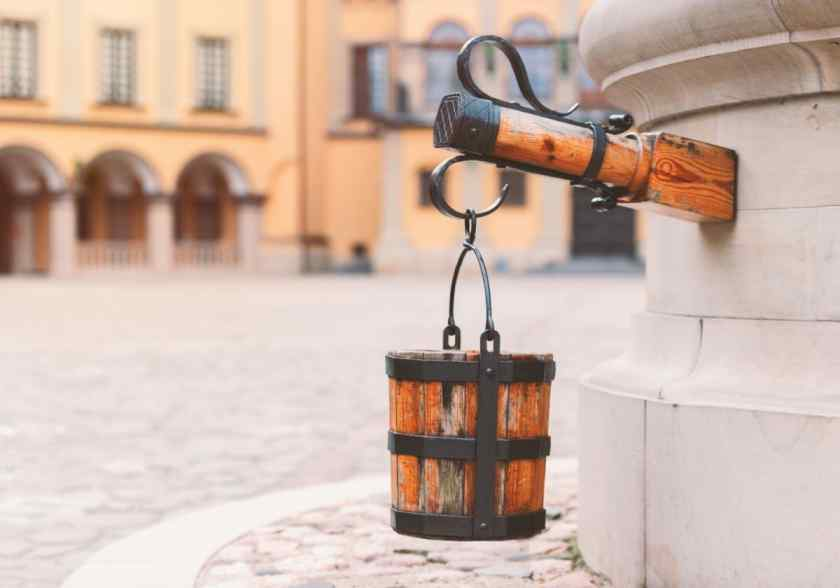
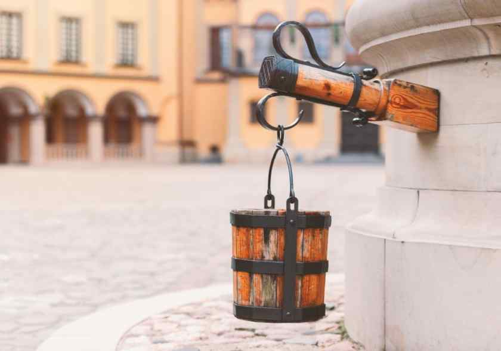

Несвижский замок
Дворец был построен в XVI веке в белорусском городе Несвиже. К проекту строительства приложил руку итальянский архитектор Джованни Бернардони. Чтобы замок был надёжным и непреступным, на месте его возведения создали искусственный 20-метровый холм, а по периметру вырыли глубокий ров. Попасть внутрь можно было лишь по единственному мосту, который поднимался и опускался с помощью специального механизма

 


Для защиты стен были отстроены высокие башни, а под крепостью оборудовали сложную систему ходов. Такой замысел сделал Несвижский замок непреступным для захватчиков, именно поэтому его не смогли взять ни шведы, ни русские, ни поляки.
Сам же дворец считался одним из самых красивых в Беларуси. Каждая зала была оборудована камином, фаянсовой или керамической печью. Потолки были покрыты росписью и позолотой. Мебель ручной работы покрывалась роскошными тканями. Несвижский замок стал настоящим культурным центром.
Помимо княжеских покоев и бальных зал, в нём размещалась библиотека, портретная и художественная галереи, музейные комплексы с богатой коллекцией оружия, монет и орденов, парадные залы, мастерские, часовня, ризница и галерея для литургических процессий.